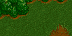
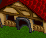
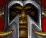
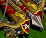
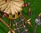
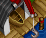

Ember Command
game design document — last updated 2026-07-24 · see ARCHITECTURE.md for the code map
Concept
An abstract real-time strategy game inspired by Warcraft II. You command at scale, not at the unit level — standing orders and high-level taps instead of clicking units around a map. It should feel like being a general, not a babysitter.
Principles
- Orders are postures, not clicks. Assign once; the simulation loops it forever. The player never repeats an order.
- The economy runs itself. Idle and new workers auto-assign (gold first, wood when gold is gone). Player taps rebalance labour; they never allocate from scratch.
- Every tap responds. A command that can't run stays visible, stays tappable, and explains itself in an error toast. Fading is reserved for real unavailability (missing tech, no worker) — never for "can't afford it right now".
- Pressure beats stockpiling. Raids scale with the day counter, so banked resources have an opportunity cost, WC2-veteran style.
- Real WC2 numbers. Costs and build/train times are the actual Tides of Darkness values.

The World — A Stack of ZonesReplaces both the fixed three-band map and the separate site/homeland systems (v0.47 rework). The world is a linear stack of zones, home at the bottom (index 0), the wilderness reaching upward. Exploring charts the next zone outward: scouts head out and spend time charting it — the more you send, the faster it goes — and what they find is rolled but hidden until the party gets there — empty ground is claimed on the spot, a garrison must be assaulted and cleared before the zone is yours. Garrisons grow tougher with depth and with how late in the game you find them. The scripted orc stronghold sits at depth 8 — always occupied, and razing it wins the game.
- Each zone owns its own resource nodes, structures, workers, and defenders. Tap a whole zone band to select it; its caption shows
name · status(uncharted / occupied / owned / home). - An uncharted zone offers explore sends from the owned zone behind it; an occupied zone offers assault sends; an owned zone offers build.
- Zone 1 is always neutral with a gold and a lumber node, so the opening expansion pays off in both resources. Deeper zones roll 1–2 nodes and a 60% garrison chance from the same pool as before (war chests, prison camps, logging camps, shrines, slave pens…).
- Clearing a garrison pays its reward — and the surviving assault column settles as the zone's defenders. Every razed garrison zone permanently slows the raid schedule.
- Garrisons are veiled — strength unknown until your own troops engage — and muster reinforcements while under attack.
 Economy & Workers
Economy & Workers
done — Workers belong to a zone and pin to a node there until it depletes, then idle and auto-reassign within their zone (preferred resource first, then gold, then wood). Harvest cycles pay for distance to the nearest depot — a town hall (any resource) or lumber mill (lumber) — so building a forward hall or mill in a remote zone genuinely speeds up its economy. The move icon transfers one worker per tap: arm it, then tap a destination zone or a specific resource node to retask (e.g. gold → wood across zones).
| Home node | Capacity | Local distance |
|---|---|---|
| 48 000 | 1 | |
| 25 000 | 1 | |
| 25 000 | 3 |
Charted zones roll their nodes from a pool (gold/hill/mountain mines, woods, deep woods). Harvest tap on a node pulls a spare worker from the same zone (idle → same resource → other resource); press-and-hold pulls every spare. Construction pulls an idle worker in the zone, then any idle worker, then one off the richest crewed node anywhere — the builder settles in the zone it built in.
 Structures
Structures
done — Buildings are built by a worker (auto-chosen, see above) via the selected zone's Build command — any owned zone can be built up, including forward town halls. They stack as one tile with a count badge; in-progress builds show as tappable cancel-and-refund chips. Real WC2 build times make construction a genuine commitment.
| Structure | Cost | Time | Effect | Status |
|---|---|---|---|---|
| 1000g 600w | 255s | Trains workers, +4 supply, resource depot; buildable in any owned zone as a forward base (home's hall alone upgrades tiers and is the loss condition) | done | |
| 500g 250w | 100s | +4 supply, stackable | done | |
| 700g 450w | 200s | Trains footmen/archers; each adds +1 training slot and +5 queue depth | done | |
| 600g 450w | 150s | Unlocks archers + towers; lumber-yield upgrades (2 tiers) | done | |
| 800g 450w | 200s | Weapon upgrades (+2 dmg) and armor upgrades (+10 hp), 2 tiers each | done | |
| 550g 200w | 60s | Shoots raiders (3 dmg/volley); needs Lumber Mill; upgradable | done | |
 Stables | 1000g 300w | 150s | Unlocks knights at the barracks; needs Keep | done |
| Cannon Tower | 1000g 300w | 190s | Tower upgrade (needs Blacksmith), 14 dmg/volley, splash — scales up to 2× against a big stack | done |
| 500g 150w | 140s | Tower upgrade (needs Lumber Mill), 8 dmg/volley | done |
 Units & Movement
Units & Movement
done — Units train with real WC2 times and costs at a barracks/stables in a zone, and join that zone's defenders; each zone renders one tile per unit type present (tap selects just that type). Patrol and Attack are gone as orders: a stationed unit defends wherever it stands, raids are intercepted by whichever zone they hit, and attacking a garrison is a zone assault. Moving between zones is instant — units leave one zone and appear in the next the moment you send them, with no travel time and no distance cost. Position still matters (a unit only fights where it stands), but repositioning never costs you a beat. Scouting the uncharted zone ahead is the one exception: the party stands out on the frontier working a shared charting ring, one tick of progress per scout per tick, so four scouts chart four times as fast as one — and sending more mid-way speeds up the party already out there. Tap a scout tile to recall the whole party. Only defenders in a zone no raid is fighting regenerate, slowly; workers mend even slower and never while any raid is engaged.
| Unit | Cost | Time | Role |
|---|---|---|---|
| 400g | 45s | Harvest & build — auto-managed per zone | |
| 600g | 60s | Melee — power 7, soaks first | |
 Knight | 800g 100w | 90s | Elite melee — power 10, trained at the barracks once a Stables stands (Keep tier) |
| 500g 50w | 70s | Ranged — power 5, needs Lumber Mill | |
 Ballista | 900g 300w | 250s | Siege — power 25, needs Blacksmith; splash — damage scales with the size of the stack it shells, up to 2× |
 Threat & Victory
Threat & Victory
done — Raiding parties spawn beyond your deepest owned zone and drive inward zone by zone toward home, moving as instantly as your own units do — they appear in a zone and fight the same beat, with no approach march to react to. Each owned zone they reach fights back with its stationed defenders and towers; raiders answer on an offset cadence, cutting down defenders, then the towers shooting at them, then workers, then razing buildings — building damage persists until repaired (repair command appears on damaged buildings; a worker walks over and returns to its node). Siege splash: ballistas and cannon towers scale their damage with how many raiders are packed into the stack they fire into (+15% each beyond the first, capped at 2×), so siege is the answer to being swarmed rather than another flat damage number. Waves of the same raider type that meet in the same zone merge into one stack — a fresh wave reinforces the grunts already hammering a zone rather than lining up beside them, and the merged stack's per-raider hp and damage are the weighted mix of both, so later waves visibly strengthen the older ones. A zone with nothing left is subdued and the raid moves straight on; losing home's town hall is defeat. Waves ramp gently by wave number (axethrowers from wave 6, ogres from 9, catapults from 12 — siege engines that ignore units and shell buildings from beyond tower range; only warriors stop them). Every raider killed drops plunder gold; every razed garrison zone permanently stretches the raid interval. War signs: a vague non-interactive strip in the frontier band — 'imminent/soon/gathering/distant' and 'few/some/many/a horde' per raider type, no numbers.
done — Win/loss is real: razing the orc stronghold at depth 8 wins; losing home's town hall loses. A full-screen result shows the day count — tap to restart.
TIME_SCALE (currently 0.3) — one constant to retune the whole game's tempo.
Garrisons (Occupied Zones)The old standalone "sites" are now the garrisons of occupied zones — same pool, same rewards, absorbed into the zone stack. Units sent in fight the garrison on the raid cadences (guards soak first, then watch towers fall); a wiped assault leaves the damage standing for the next column. Rewards on clearing: war chests (gold + lumber caches), freed footmen/knights/archers who join the conquering force, freed peasants who join the zone's workforce, a looted idol — and the zone itself, whose survivors become its defenders.
 Upgrades
Upgrades
done — Tech upgrades follow the guard-tower pattern: one button on the source structure, timed, cancellable with refund, never consuming a worker. One research at a time per source building — a second blacksmith unlocks a second parallel slot. Implemented: lumber harvesting (Lumber Mill, 2 tiers, +25% yield each), weapons (Blacksmith, 2 tiers, +2 dmg per unit), armor (Blacksmith, 2 tiers, +10 hp per unit), ballista engineering (Blacksmith, 2 tiers, +10 dmg per ballista) — the player's counter-curve to daily raid scaling.
- idea Gold mining efficiency (Town Hall)
- done Hall tiers: Town Hall → Keep (2000g 1000w, needs Barracks) → Castle (2500g 1200w, needs Stables) — each tier +600 hall hp and +4 supply; the Keep gates the Stables, which unlocks Knights at the barracks
Raid posture (harass enemy economy) distinct from Attack (kill the base).
Levels & the Sea (Planned)Two planned expansions, designed against the zone architecture but not yet built. Both stay table-driven: new zone kinds, buildings, and units are data entries, not new systems.
idea — Levels. A run becomes one level: a scripted layout (stronghold depth, garrison scaling curve, raider mix, node richness) that ramps in difficulty from level to level. Level 1 is roughly today's game; later levels push the stronghold deeper, mix ogres/catapults in earlier, and thin the neutral zones. Winning unlocks the next level (persistence stores the highest unlocked). Implementation-wise a level is a LEVELS[n] config consumed by makeZone/garrisonComposition/RAIDER_TYPES scaling — one table entry per level.
idea — Water exploration & expansion. Zones gain a domain (ground · coast · sea). Some level layouts place a coastal zone along the stack; beyond or branching from it lie sea zones that ground units cannot enter — the frontier splits into a land road and a sea road.
- idea Shipyard — buildable only in a coastal zone (real WC2 cost 800g 450w). Acts as the naval hall: trains ships and serves as the oil depot. Foundry/Refinery follow later as the naval blacksmith/mill equivalents.
- idea Oil — the third resource finally in play. Sea zones roll oil patches as their nodes; only Oil Tankers (the naval peasant, 400g 250w) can harvest them, hauling to the nearest shipyard/refinery — the depot-distance rule already generalizes.
- idea Warships — ARMY entries with
domain: 'sea': Destroyer (700g 350 oil — the naval footman), Battleship (siege, the naval ballista), Transport (ferries ground units across a sea zone to land beyond, when a level's layout demands it). Domain gates everything existing: sea units station/assault only coast/sea zones, ground units only ground/coast — one filter in the send/assault/explore commands. - idea Sea threats — orc destroyers and juggernauts as sea-domain garrison templates guarding oil patches, and sea raids that strike coastal zones (defended only by that zone's ships and towers).
Persistence
idea — autosave to local storage, resume on reload, no explicit load step. Not implemented; every reload is a fresh start.
Design Review — Proposed Directions (2026-07-20)
A critical pass over the running game. Everything here is proposal, not decision — promote items into the sections above as they're decided.
Diagnosis. The opening is decision-dense (build order, labour split, first patrol) and the ending is real, but the middle game idles: once the economy self-runs and postures are set, the player is waiting for raids and watching timers. Attack — the win condition — is the least interesting order: assign and wait, with no visible fight. The biggest wins are whatever puts mid-game decisions back and makes the enemy side legible.
- done The world as sites, not just bands — first step shipped as Conquerable Sites (see its section above). Still open from the original idea: outposts that act as raid sources (razing one slows raids) and targeting the stronghold itself site-by-site.
- idea Mirror the enemy base. Make it a real entity — hp segments, a garrison that thins as you grind, visible rebuilding, counter-pressure that spikes while you besiege. The attack force should trade volleys and wounds like raid combat at home, not silently drain a number.
- idea Raid variety as posture puzzles. Wolf riders that outrun the patrol buffer (defenders matter), siege parties that ignore units and hit buildings (patrol matters double), a telegraphed horde every N waves ("war drums — three days to prepare"). Each variant asks for a different posture split — the game's core verb.
- idea Resolve Raid vs Attack (open note under Upgrades) as:
Raid= fast strike on an outpost or the enemy economy — quick march, steals gold, low risk;Attack= commitment against the stronghold — slow march, casualties, wins the game. - idea Hall tiers as the pacing spine. Already listed under Upgrades — promote to next major feature: Keep/Castle gate knights and tier-2 tech so the mid-game has a build ladder to climb between waves.
- idea A hero. One named unit that leads whichever posture it joins (small aura bonus), falls to 1hp instead of dying, levels across the run. Cheap to build atop per-order pools; large attachment payoff, answers the hero-override open question.
- idea Drag between pools. Direct manipulation for the core verb: drag an army tile from Defend onto Patrol to move one unit (hold-drag = all). Command card stays for build/train/tech. Removes the select→scan→tap loop; the zones already put source and target on one screen.
- idea Theater map. Evolve the zone bands into a stylized territory view: sites positioned within their band, posture tokens standing where they operate, raids visibly walking the road home. Same full-rebuild DOM approach — positioned tiles instead of rows.
- idea Surface the race. A one-line stat strip: gold/lumber per minute, army power per posture, and (with a patrol out) the sighted wave's size. Turns posture math from guesswork into a read.
- idea Advisor line. One contextual hint slot ("Supply capped — build a farm", "No patrol — the next wave arrives unseen"). Doubles as onboarding; cheaper than a tutorial.
- idea Event ticker. Battle and economy events narrate into the buried menu log; float the latest one briefly under the top bar. (Toast stays errors-only, per convention.)
Late Game (day 10+) — Candidate Directions
The economy, posture play, and sites carry a run to roughly day 15–17; past that the content flattens. Candidates for the next step, all WC2-native. Sea combat is deliberately deferred — oil, shipyards, and naval maps stay off the table for now.
- done Castle tier + Stables + Knights. The Keep gates the Stables, which unlocks Knights at the barracks rather than training them itself; Knights are the tier-2 melee elite (fast, expensive, hp ~90/dmg ~10). The player's late-game power spike, mirroring the wave ramp. Cheapest to build: one BUILDINGS row, one UNITS row, one ARMY row.
- done Enemy escalation variety: ogres and catapults. Ogres join waves ~10+ as a heavy third party; catapult parties (~12+) ignore units and shell buildings from range — towers can't answer them, only a sortie can, breaking the tower-turtle equilibrium.
- done Stronghold campaign — evolved into the world-zone stack (v0.47): the road to the stronghold at depth 8 is the campaign, garrison zone by garrison zone.
- idea Magic tier: Church + Mage Tower. Paladins (heal the defend pool between volleys) and Mages (splash volley vs whole raids) as Castle-tier casters — WC2's late-game texture, and a gold sink for the deep economy.
- idea A hero. One named WC2 hero (Lothar sprite is in the icon set) leading whichever posture it joins: small aura, survives at 1 hp, levels over the run.
UI Conventions Established So Far
Patterns already built — extend these rather than inventing new ones:
- Zone bands — the world renders one tappable band per zone (inset ring when selected), frontier at the top, home at the bottom; the view opens scrolled to home. Every band is exactly four button rows tall with fixed roles, always mounted whether or not they hold anything:
1 theirs(raiders here, plus an enemy zone's garrison and towers),2 ours(defenders, or our assault column on an enemy zone),3 ground(resource nodes and crews),4 built(our buildings). Nothing below a zone shifts when a fight starts or a pool empties. - Fog of war — uncharted ground renders flat black (only scouts and the war-signs strip read on it); a charted zone holding nothing of ours — no defenders, no assault column, no workers, no buildings — sits under a semi-transparent dark wash. Putting anything back in the zone lifts it. Taps pass through the wash.
- Real WC2 projectiles & impact feedback — arrows, ballista bolts, cannonballs, and flaming catapult stones are the real sprites (from the Magic & Missiles sheet), rotated along their flight (axes spin); cannonballs and stones bloom into WC2 explosion sprites on landing. Damage numbers float off the tile the volley hits, timed with the impact, and killed raiders float their gold bounty. The built row keeps one slot per building type, so effects happen in place: the first building of a type going up shows the WC2 construction-site lot exactly where the finished building will stand (ring = build timer; adding copies to a standing stack just ticks its count), and a stack being wiped out jolts the screen and smokes as WC2 rubble in the very slot its tile occupied.
- Readable blockers & live economy — gold and lumber show their live income (
+38/s) under the stockpile; the supply counter turns red the moment it's pinned at the cap; and on a command you can't afford, the specific missing resource number reads red rather than just dimming. The band a raid is actively fighting in pulses a red inset ring, so danger is visible on the world itself, not only via the edge alert bars. - Threat clock in the header — while no raid is on, the world header reads
RAID soon · 3/20: the same deliberately-vague war-signs wording as the frontier strip (imminent / soon / gathering / distant), plus how deep the push has reached. It turns red when a wave is imminent, so the threat read sits where you're already looking. - Strike-by-strike combat — a volley draws one lunge per melee attacker (capped at 5, ~100ms apart; ranged units hold still and let their shot carry it, and towers hold still too), and the target's hurt flash is held back to land with the blow: ~110ms for a melee swing, ~260ms for a projectile. Ranged attackers (archers, ballistas, towers, axethrowers, catapults) fly a placeholder sprite from their tile to the target's over exactly that flight time.
- Grouped tiles — anything stackable renders as one compact tile with a
count-badge(defenders spread into one tile per unit type per zone). - Radial progress rings — canvas conic-gradient rings (
radialProgressCanvas), stacked semi-transparent when several timers share a tile, animated smoothly between ticks. - Job chips — every in-flight timed job (training, construction, upgrade) is one tappable chip: its own ring, tap to cancel and refund.
- Icon-only commands — WC2-style command card; cost renders as an overlay strip of icon+number pairs, left-aligned; number-key hotkeys on desktop, hidden on touch.
- Flash feedback — tiles flash translucent red when taking damage and translucent white on arrivals (worker assigned to a node, new unit/building). Driven by a keyed registry so the full-rebuild render doesn't restart them.
- Combined hp bars — army tiles, raiding parties, garrisons, and buildings carry one thin bottom bar for the whole stack's combined remaining hp (green for yours, red for theirs), divided into one cell per unit in the stack — three units, three segments — so deaths read as cells emptying (hordes above 24 collapse to a plain bar), measured against how strong the stack was when the fight started — so it drains steadily from full to empty as units fall, instead of resetting on each death. Only shown while damaged; a healthy group has no bar. The bar holds its old value while projectiles are in flight, then drains in sync with the hurt flash as the strikes land, painting the just-lost slice as a bright fading chip — so even a small volley visibly tears something off at the moment of impact.
- Errors in the toast, events in the log — a refused tap explains itself in the floating error label; the menu log narrates gameplay. Fading marks non-resource unavailability only.
- Instant touch — selection on
pointerupwith a move threshold (so scrolling the node row doesn't select); zoom guards exempt interactive controls; 14px minimum font. - Cheat toggles —
fast train/fast harvestmultiply timers byCHEAT_SPEED; keep them working, they're the dev loop.
Working With This Codebase
ARCHITECTURE.mdis the code map: data tables (BUILDINGS/UNITS/ARMY), the unified job system, recipes for adding content.CLAUDE.mdhas the working conventions.- No build step, no framework.
gameis the single state object;render()fully rebuilds — don't add diffing.